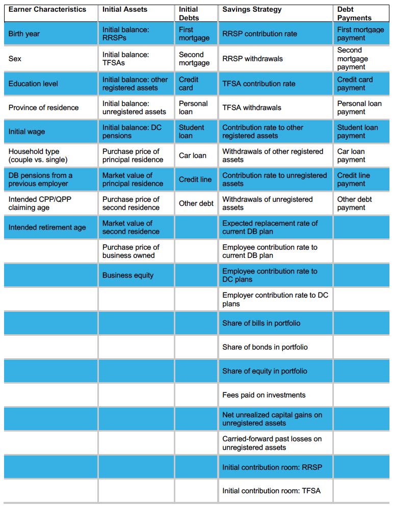

Initialisation¶
This module sets up households and attaches assets and debts to them. The table below shows all the individual inputs to the CPR (some of them are entered in other modules).
Though an example input file is provided as part of the package, a tutorial is also offered to show users how to modify those inputs to use the ones of their choice. NOTE: users must be careful when using their inputs, as a general error message will be generated if any of the – numerous – inputs is incorrectly specified (i.e. contains a mistake or is highly implausible).
-
CPR.initialisation.create_hh(index, d_hh, common, prices)¶ Function that creates a household with one or two persons and attaches assets and debts.
-
class
CPR.initialisation.Person(d_hh, l_sp, common, prices, s_=False)¶ This class creates a person.
- Parameters
d_hh (dict) – dictionary containing all informations about households
l_sp (list) – list of features attached to spouses
common (Common) – instance of the class Common
prices (Prices) – instance of the class Prices
s_ (bool) – False for head of household, True otherwise
-
create_wage_profile(common, prices)¶ Function that creates wage profiles for each realisation of uncertainty, to be used when the stochastic version of the tool is selected.
- Parameters
common (Common) – instance of the class Common
prices (Prices) – instance of the class Prices
- Returns
Wage profiles.
- Return type
np.array
-
class
CPR.initialisation.Hhold(d_hh, l_hhold, index, common, p0, p1=None)¶ This class creates a household.
- Parameters
-
set_other_years(common)¶ Function that sets years of partial and full retirement as well as years in which pre-retirement and post-retirement consumptions are assessed.
- Parameters
common (Common) – instance of the class Common